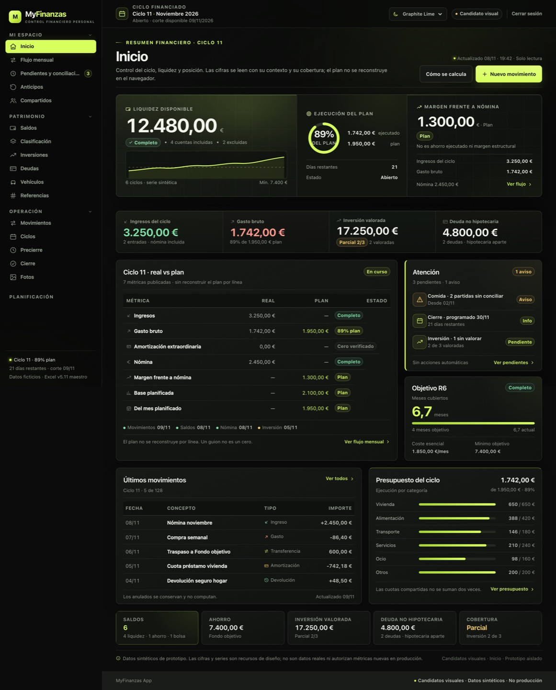
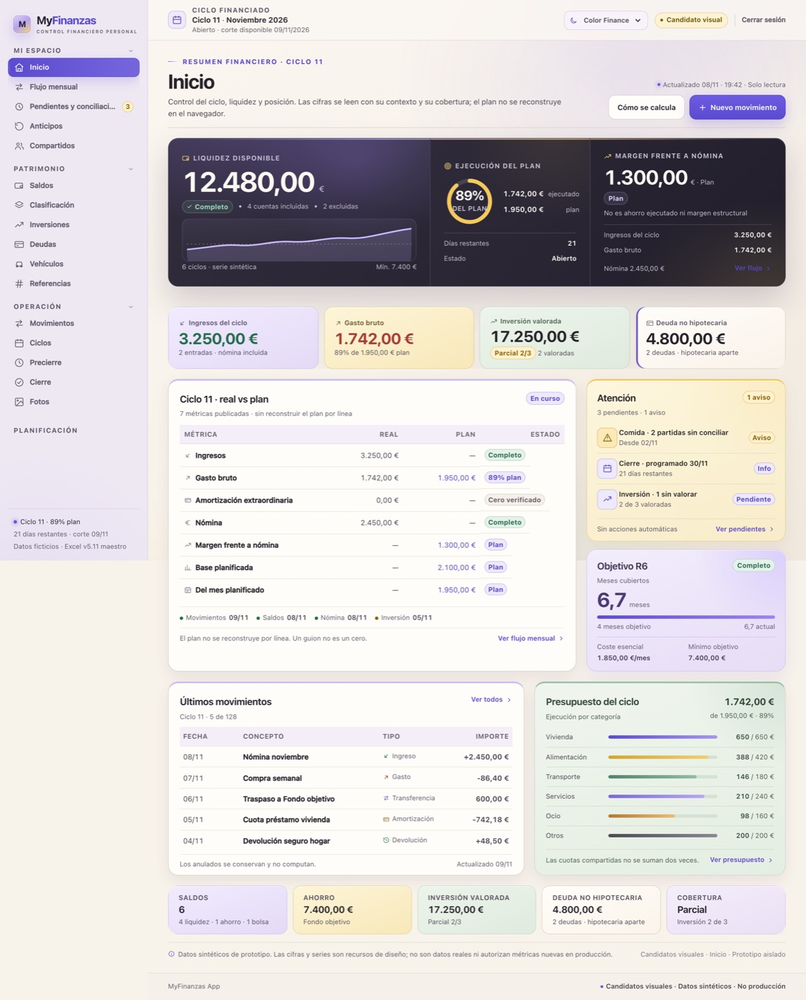
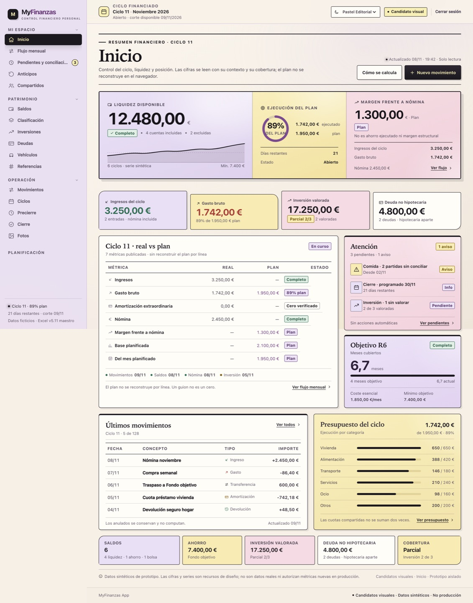

MyFinanzas · Fase 2 · Inicio 1440
Los tres candidatos, de arriba abajo
Héroe, KPI, ciclo, atención, movimientos, presupuesto y posición con la misma estructura C.
Capturas completas a 1440 px de ancho. Solo Inicio de escritorio; no hay Movimientos, móvil ni estados finales de estos temas.



Graphite Lime
La retícula del héroe y las tablas finas mantienen la lectura. El lima aparece en acentos, no en superficies completas.
Color Finance
Las tarjetas KPI y el presupuesto llevan el color; el ciclo y los movimientos permanecen sobrios para no perder precisión.
Pastel Editorial
El hero collage se mantiene legible y las tablas siguen en tinta negra. La asimetría se concentra en KPI, posición y bordes.
Prototipos aislados. Datos sintéticos. No se han modificado la aplicación, los tokens de producción, la API, SQLite ni el Excel. No integrado.